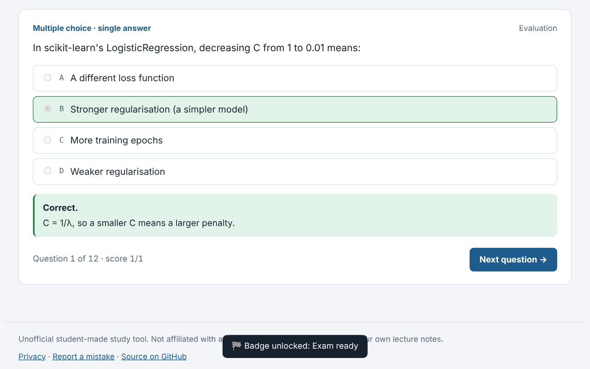
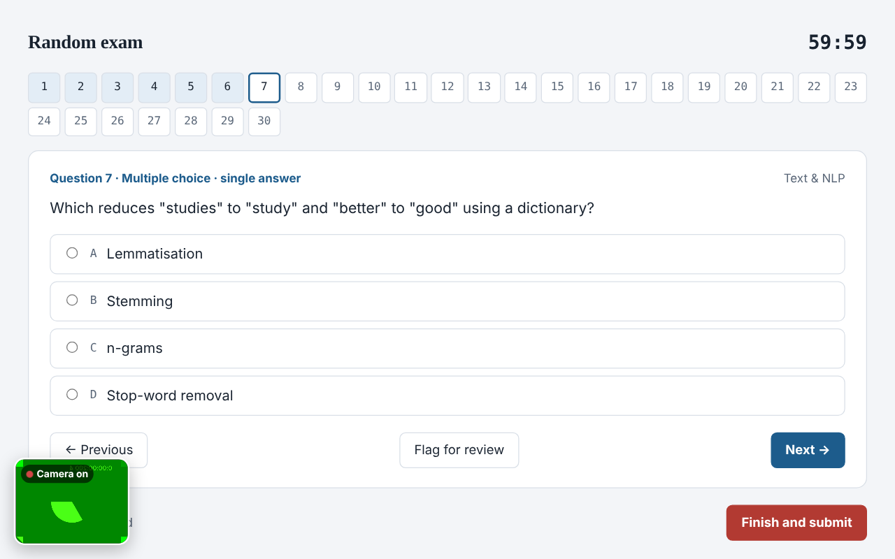
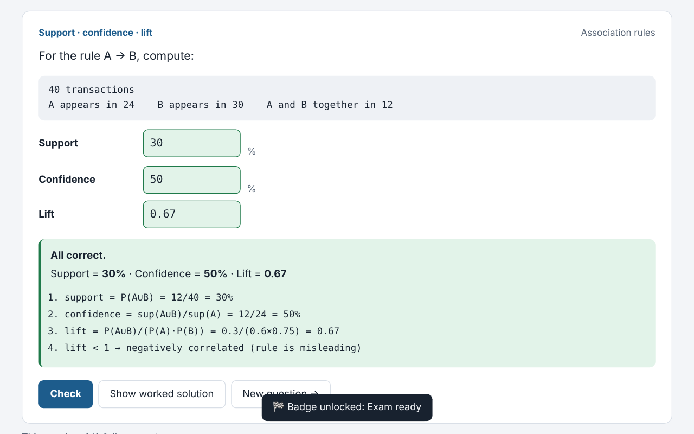
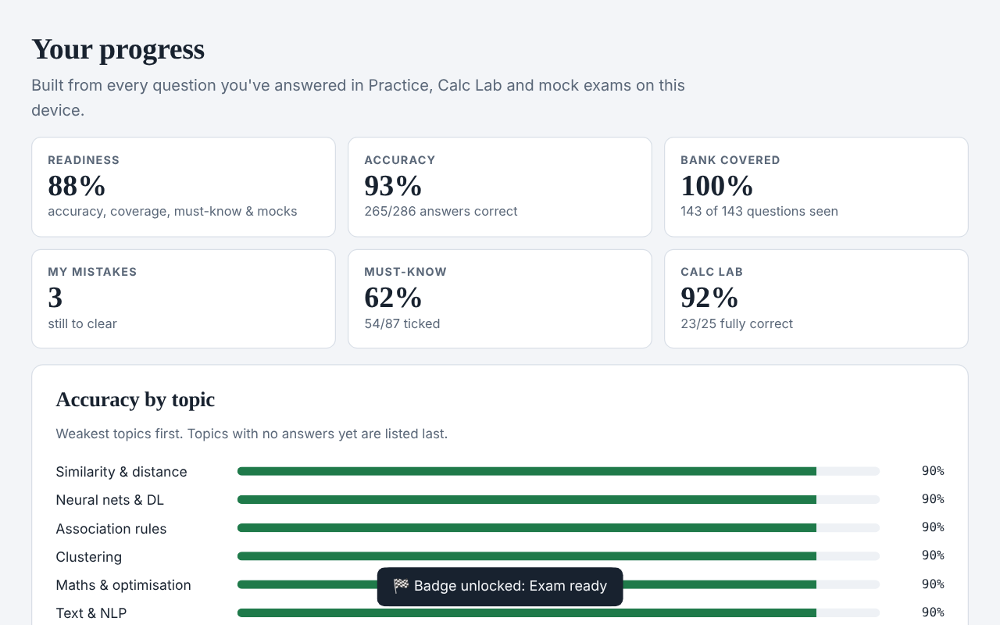

Practice with explanations
Single-answer, select-all and matching questions, just like computer-based exams. Every wrong answer goes into My mistakes until you get it right.
A complete AI & machine learning course with worked examples, memory tricks, five portfolio projects, an interview question bank, a 12-week roadmap and timed exams with certificates. Fair prices in your own currency.

Single-answer, select-all and matching questions, just like computer-based exams. Every wrong answer goes into My mistakes until you get it right.

30 questions, a 60-minute timer, flags and auto-submit. Then a breakdown by topic so you know exactly what to fix.

Unlimited fresh calculations: precision, recall, lift, Gini, distances, k-means and more, each with a step-by-step solution you can do without a calculator.

Foundation, Professional and Advanced: 38 lessons from statistics and linear algebra to transformers, LLM engineering, agents, production ML and system design, plus a marked capstone project. Progress, mock history and accuracy by topic sync to your account on every device.
A daily goal, streaks and spaced repetition that brings back each question just before you'd forget it, plus a countdown to your exam.
Foundation papers, a Professional exam and an Advanced exam, plus timed topic tests, each with a full review and a verifiable certificate at 70%.
Earn badges as you go, and a verifiable certificate when you pass a full exam with 70% or more.
All lessons, practice questions, Calc Lab drills, flashcards, the study coach and the Career hub (roadmap, projects, interview prep, cheat sheets) are free. The timed exams and certificates unlock with a small one-off fee in your local currency, for example ₹199 in India or $2.99 in most countries. There are no ads.
To keep results and certificates fair. During an exam your camera stays on with a visible preview, and a photo is taken at the start, every 5 minutes and when you come back from another tab. Photos are stored privately, seen only by the organiser and deleted automatically after 30 days. No sound is recorded. You agree to this before each exam.
Yes, if you haven't started a course exam. Cancel in My account any time before you start your first exam and you get the full amount back. Once you start an exam, the payment is non-refundable. You agree to this before paying.
Share your personal link from the Refer & earn tab. You earn £1 for every friend who signs up with it, unlocks the course exams and studies on 10 different days. Request your reward in the app and the organiser sends it to you.
Pass a full 30-question course exam with 70% or more and you can claim a certificate with your name, score and a unique ID. Anyone can check it with its verification link. It records a practice result; it isn't a university qualification.
No. It's an unofficial, student-made tool. It isn't affiliated with any university. Always check against your own course notes.
Yes. Open the link and choose Add to Home Screen to install it like an app. It keeps working offline once it has loaded, and your answers sync when you're back online.
They're stored privately by the class organiser and used only to run the app: logging in, saving your progress, emailing reset codes and the optional leaderboard. Your password is never stored in readable form. You can delete your account at any time. Read the privacy notice.
Choose Forgot password? on the login form. A 6-digit code is emailed to the address on your account.
Please report it here and it'll be fixed for everyone.
Every fact the exam can test, one line each. Tick a line only when you can say it from memory without looking. Your ticks are saved on this device.
Exam-style questions for every topic of the course. You get instant feedback and an explanation for each one. Filter by topic to drill weak areas.
Tap the card to flip it. Use the arrow keys to move between cards and the space bar to flip.
An unlimited supply of fresh calculation questions with new numbers every time. Work each one out on paper, as in the exam, type your answer, then check the worked solution.
Built from every question you've answered in Practice, Calc Lab and mock exams on this device.
Classmates who chose to join, ranked by their best full mock score. Practise more and take full mocks to climb.
Loading…